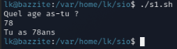
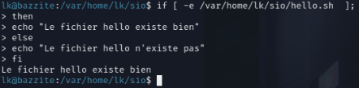
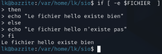

Documentation : Scripting en Bash¶
0.¶
Ce guide présente les bases fondamentales pour créer des scripts d'automatisation sous Linux.
1. Structure d'un script¶
Tout script Bash doit commencer par le Shebang. Cette ligne indique au système que le fichier doit être interprété par Bash.
Exécution¶
Pour qu'un script puisse être lancé, il doit posséder les droits d'exécution :
Astuce
Utilisez l'extension .sh pour identifier vos scripts, bien que ce ne soit pas obligatoire sous Linux.
2. Variables et Entrées¶
En Bash, la gestion des espaces est cruciale : aucun espace autour du signe = lors de l'assignation.
#!/bin/bash
# Déclaration
NOM="Loris"
echo "Vous êtes en BTS SIO, $NOM"
# Lecture d'une entrée utilisateur
echo "Quel âge as-tu ?"
read AGE
echo "Tu as ${AGE}ans."

3. Les Conditions¶
Les conditions s'écrivent entre crochets [ ]. Attention : les espaces après [ et avant ] sont obligatoires.
ex:1

ex:2

Comparateurs numériques¶
| Opérateur | Signification |
|---|---|
-eq |
Égal à (Equal) |
-ne |
Différent de (Not equal) |
-gt |
Plus grand que (Greater than) |
-lt |
Plus petit que (Less than) |
-ge |
Supérieur ou égal |
-le |
Inférieur ou égal |
Exemple¶
if [ $AGE -ge 18 ]; then
echo "Accès autorisé : vous êtes majeur."
else
echo "Accès refusé : vous êtes mineur."
fi


4. Les Boucles¶
Les boucles permettent de répéter des tâches sur des listes de fichiers ou des plages de nombres.
Boucle For¶

Boucle While¶
5. Gestion des Arguments¶
Vous pouvez passer des paramètres à votre script lors de son appel : ./script.sh arg1 arg2.
| Variable | Description |
|---|---|
$0 |
Nom du script |
$1 à $9 |
Premier, deuxième argument, etc. |
$# |
Nombre total d'arguments passés |
$@ |
Liste complète des arguments |
$? |
Code de retour de la dernière commande (0 = succès) |
6. Exemple complet : Backup automatique¶
Voici un script récapitulatif pour sauvegarder un dossier.
#!/bin/bash
SOURCE="/home/user/documents"
DESTINATION="/home/user/backups"
DATE=$(date +%Y-%m-%d)
# Vérification de l'existence du dossier source
if [ -d "$SOURCE" ]; then
echo "--- Début de la sauvegarde ---"
tar -czf "$DESTINATION/backup_$DATE.tar.gz" "$SOURCE"
if [ $? -eq 0 ]; then
echo "Succès : Fichier sauvegardé dans $DESTINATION"
else
echo "Erreur : La compression a échoué"
fi
else
echo "Erreur : Le dossier source n'existe pas."
exit 1
fi
7. Les Variables de Position (Arguments)¶
Les variables de position sont des variables spéciales créées automatiquement par Bash dès que tu passes des arguments à ton script lors de son exécution.
Les variables clés¶
| Variable | Rôle |
|---|---|
$0 |
Le nom du script lui-même. |
$1 |
Le premier argument passé. |
$2 |
Le deuxième argument passé (et ainsi de suite jusqu'à $9). |
${10} |
Le dixième argument (les accolades sont obligatoires après 9). |
$# |
Le nombre total d'arguments fournis. |
$@ |
La liste de tous les arguments (traités comme des mots séparés). |
$? |
Le code de retour de la dernière commande (0 = succès). |
Exemple d'utilisation¶
Imaginons un script nommé config_user.sh :
#!/bin/bash
# Vérifier si on a assez d'arguments
if [ $# -lt 2 ]; then
echo "Usage: $0 <prenom> <nom>"
exit 1
fi
echo "Nom du script : $0"
echo "Traitement de l'utilisateur : $1 $2"
echo "Nombre total d'arguments : $#"
Appel du script :
La commande shift¶
La commande shift est une astuce souvent utilisée dans les scripts complexes. Elle permet de "décaler" les arguments vers la gauche : $2 devient $1, $3 devient $2, etc. C'est très utile pour traiter le premier argument puis boucler sur le reste.
#!/bin/bash
echo "Premier argument : $1"
shift
echo "L'ancien deuxième argument est maintenant le premier : $1"
Le saviez-vous ?
La variable $@ est généralement préférée à $*. Pourquoi ? Parce que "$@" protège les arguments contenant des espaces, les gardant bien séparés, alors que "$*" les fusionne en une seule grande chaîne de caractères.